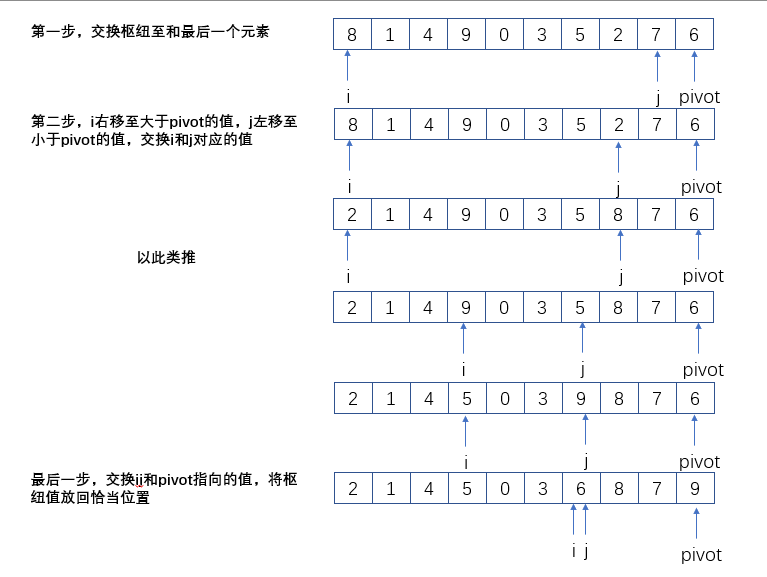
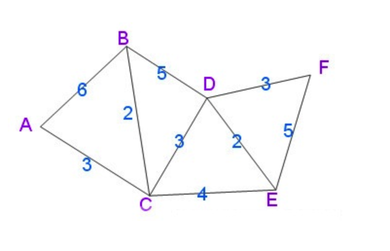
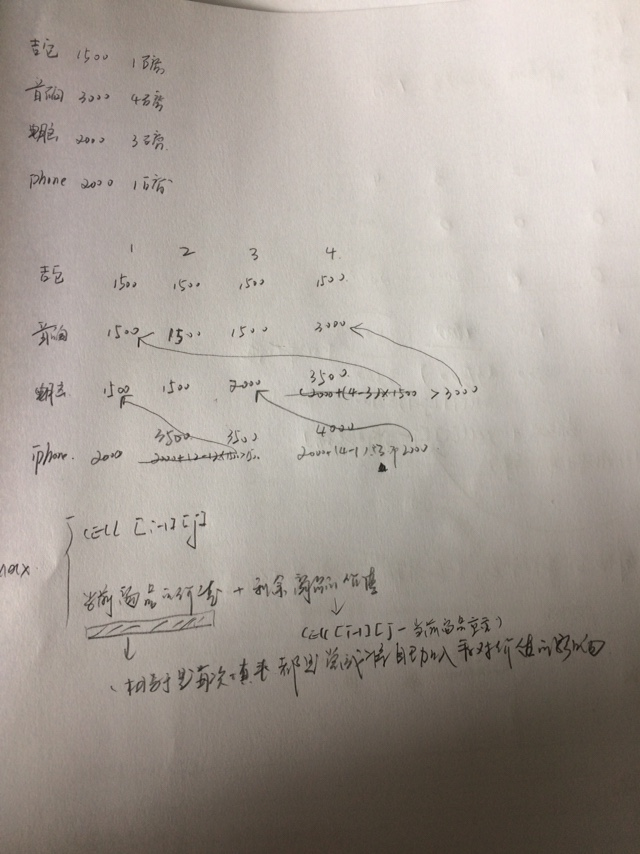

《算法图解》
最容易读懂的算法入门书
O()表示法
一些常见的大O表示
O(logn) 如二分查找
O(n) 如普通的线性查找
O(n * logn)
O( N2 )
O(n!)
算法的速度 指的并非时间，而是操纵数的增速
谈论算法速度时，我们说的是随着输入的增加，运行时间将一怎样的速度增加
随机访问
数组擅长随机访问。且在同一数组中元素类型都必须相同。（元素相同）
顺序访问
链表擅长顺序访问
数组与链表的存储
有时候将两者的结合起来存储。更快。利用了随机访问的快速，也可利用链表插入的快速
特别思考
在iOS中数组时可以存放不同对象类型的数据的。从这个可以推测，NSArray实际不是数组，而是由其他数据结构实现的数组的特性的数组。
排序
冒泡排序
比较相邻的元素，如果前一个比后一个大，就把它们两个调换位置。
对每一对相邻元素作同样的工作，从开始第一对到结尾的最后一对。这步做完后，最后的元素会是最大的数。
针对所有的元素重复以上的步骤，除了最后一个。
持续每次对越来越少的元素重复上面的步骤，直到没有任何一对数字需要比较。
选择排序
选择排序实际上是每次将从原数据里取出最大，放到新数组的后面。时间复杂度时O( N2 )
特别说明：有个小疑问？因为选择排序每次的查找都会少一个元素，为什么时间复杂度还是N2呢。n,n-1,....2和1。即O(n* n*1/2)。大O表示法省略常数。即O( N2 )
特别说明
选择排序相比与冒泡排序只需要交换一次。
快速排序
分治法
分而治之是解决问题的的一种思路。
每一步都对问题的规模进行缩小。
分治工作原理(很重要)
1. 找到简单的基线条件
2. 确定如何缩小问题规模，使其最终符合基线条线条件
（也就是基线条件是确定的，要找到将问题规模缩小的方法）
特别说明:
分治法有点类似于数学归纳法。由小确定推到大确定。
示例
快速排序算法是一种分治法的典范。
所以找到规模的缩小方法。
求sum(2,4,6)的和
sum(2,4,6) = 2 + sum(4,6) ;
大规模变成一个小规模，小规模在变成小规模，最终变成一个确定的值。然后又利用小规模的值逐级计算大规模。快速排序
数组为空或者一个元素时本身就是有序的。
规模缩小的方法是每一个有序都包括左有序+ 基准 + 右有序
所以关键问题变成左右划分的问题了。
下面是划分的一种方法

（这个个我没有实现上面对的东西?????）
快速排序是不稳定的算法。不稳定性在于分区交换时，如果有相同的值，那个值不一定是原有的那个值了。
归并排序
堆排序
递归
编写递归函数时，每个递归函数有两部分，退出条件，递归表达式
在理解递归前需要理解调用栈
- 5!(5的阶乘)
public static int factorial(int n){
//5的阶乘
if(n == 1){
return 1;
}
return n * factorial(n-1);
}
- 斐波那契数列 1、2、3、5、8、13、21
// 1、2、3、5、8、13、21
public static int factorial2(int n){
if(n == 1){
return 1;
}
if(n == 2){
return 2;
}
return factorial2(n -1) + factorial2(n-2);
}
散列表
散列函数
广度优先搜索
图
广度优先搜索
用于解决无权有向图的最短路径问题狄克斯特拉算法
解决有带权有向图的最短路径问题
算法的宗旨：每次以最短路径为基准，计算其他未做过基准的节点的距离，重复。
示例

有个疑问？狄克斯特拉算法这么保存路径
？？？？？？
- 贝尔曼-福德算法（不是重点） 解决带负边权的图的最短路径
贪婪算法
找局部最优解，最总得到的就是全局的最优解。
贪心算法没有固定的算法框架，算法设计的关键是贪心策略的选择。贪心算法不是对所有都能得到整体的最优解，选择贪心策略必须具备无后效性（某个状态以后的过程不会影响前面的状态）。
教室调度
希望在这间教室上尽可能多的课。
具体做法
选出结束最早的课（贪心策略），接下来选上节课结束后的能结束最早的课。
实际的贪心策略就是找出结束最早的课背包问题
包能装35磅的东西，有3000美元，30磅的音响。有2000美元，20磅的电脑，有1500美元15磅的吉他。
采用贪心策略
先选最贵的3000美元，30磅，但容不下其他的物件。
实际的答案是可以是电脑与吉他一起放进去。
所以背包问题用贪心解决不了，这个只能得到近似值。
因为不符合无后效性。当然背包问题可以用动态规划方法找到最优解。集合覆盖问题
全美50州的观众收听得到广播。因为每个广播播出需要支付一定的费用。所以需要决定哪些广播播出。问题变成在50州里找出能满足要求的集合（实际上每一广播的覆盖就是一个集合）。50个元素的子集合有2的n次方个，n很大时，这个值将变的很大。所以用计算机计算也是不可能的。
对于以上的问题只能得到近似算法
贪心算法
选出这样一个广播台，即它覆盖了最多的未覆盖州。重复第一步，直到覆盖了所有的州。（至于如何找到覆盖了最多的的未覆盖，就是集合运算，比如集合的交集，差集）NP完全问题(nondeterministic polynomial time)
旅行商问题
我们假定不知道从那里离出发的5个城市。找出前往这5个城市的最短路径。
5个城市，路线有2的5次方。加入城市在多点。就会有路线2的n次方条。这样就会是一个很大的数。集合覆盖问题
上面已经讲过了以上两个问题都是NP完全问题。NP完全问题，一般都是采用贪婪算法求近似值。
NP完全问题识别
- 元素较少时算法的运行速度非常快。但随着元素的数量的增加，速度会变得非常慢。
- 涉及到"所有组合"的问题通常都是NP问题
- 不能讲问题分成小问题，必须考虑各种可能的情况
- 如果问题涉及集合，集合覆盖，旅行商问题等且难以解决
动态规划
把多阶段过程转化成一系列单个问题，利用各个阶段之间的关系或者结果，逐个求解。
维基百科：
动态规划背后的基本思想非常简单。大致上，若要解一个给定问题，我们需要解其不同部分（即子问题），再根据子问题的解以得出原问题的解。
通常许多子问题非常相似，为此动态规划法试图仅仅解决每个子问题一次，从而减少计算量：一旦某个给定子问题的解已经算出，则将其记忆化存储，以便下次需要同一个子问题解之时直接查表。这种做法在重复子问题的数目关于输入的规模呈指数增长时特别有用。
示例

每一行都是利用上一行的计算的结果。（每一行都是上面物品的价值与重量的最优解），这里利用表来存计算结果数据。
小结
需要给定约束条件下优化某种之前时
问题可以分散为离散的子问题时
每种动态规划解决方案都涉及网络
单元格中的值通常就是你要优化的值
每个单元格都是一个子问题
动态规划解决方案的公式不同问题公式也不同，需要自己摸索